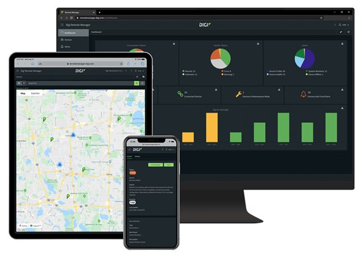

Un système de géolocalisation permet de localiser des véhicules en temps réel. Il se compose d’un traceur GPS installé dans le véhicule relié à un logiciel de suivi. Ces systèmes sont très avantageux pour les entreprises car ils permettent de nombreux bénéfices tels que des économies sur le carburant ou encore un gain de productivité.
l’essentiel des termes liés à la géolocalisation :
Adresse IP
ASP : « Application Service Provider »
Géolocalisation
GPS
GPRS
Geofencing